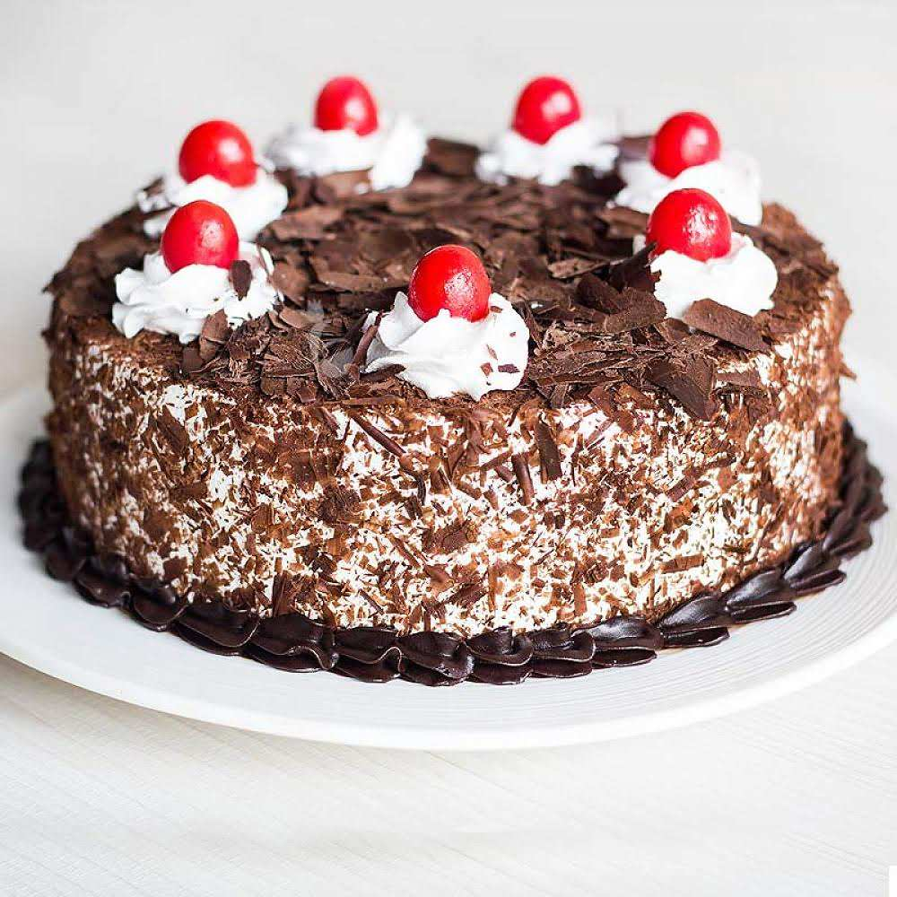

Black Forest Cake

Description:
The original Black Forest cake with whipped cream frosting and sour cherries.
Ingredients:
- 2 ⅛ cups all-purpose flour
- 2 cups white sugar
- ¾ cup unsweetened cocoa powder
- 1 ½ teaspoons baking powder
- ¾ teaspoon baking soda
- ¾ teaspoon salt
- 3 eggs
- 1 cup milk
- ½ cup vegetable oil
- 1 tablespoon vanilla extract
- 2 (20 ounce) cans pitted sour cherries
- ¼ cup cornstarch
- 1 teaspoon vanilla extract
- 3 cups heavy whipping cream
- ⅓ cup confectioners' sugar
Steps:
- Preheat oven to 350 degrees F (175 degrees C). Grease and flour two 9 inch, round, cake pans; cover bottoms with waxed paper.
- In a large bowl, combine flour, 2 cups sugar, cocoa, baking powder, baking soda, and salt. Add eggs, milk, oil, and 1 tablespoon vanilla; beat until well blended. Pour batter into prepared pans.
- Bake for 35 minutes, or until wooden toothpick inserted in centers comes out clean. Cool layers in pans on wire racks 10 minutes. Loosen edges, and remove to racks to cool completely.
- Drain cherries, reserving 1/2 cup juice. Combine reserved juice, cherries, 1 cup sugar and cornstarch in a 2 quart saucepan. Cook over low heat until thickened, stirring constantly. Stir in 1 teaspoon vanilla. Cool before using.
- Combine whipping cream and confectioner's sugar in a chilled medium bowl. Beat with an electric mixer at high speed until stiff peaks form.
- With long serrated knife, split each cake layer horizontally in half. Tear one split layer into crumbs; set aside. Reserve 1 1/2 cups Frosting for decorating cake; set aside. Gently brush loose crumbs off top and side of each cake layer with pasty brush or hands. To assemble, place one cake layer on cake plate. Spread with 1 cup frosting; top with 3/4 cup cherry topping. Top with second cake layer; repeat layers of frosting and cherry topping. Top with third cake layer. Frost side of cake. Pat reserved crumbs onto frosting on side of cake. Spoon reserved frosting into pastry bag fitted with star decorator tip. Pipe around top and bottom edges of cake. Spoon remaining cherry topping onto top of cake.